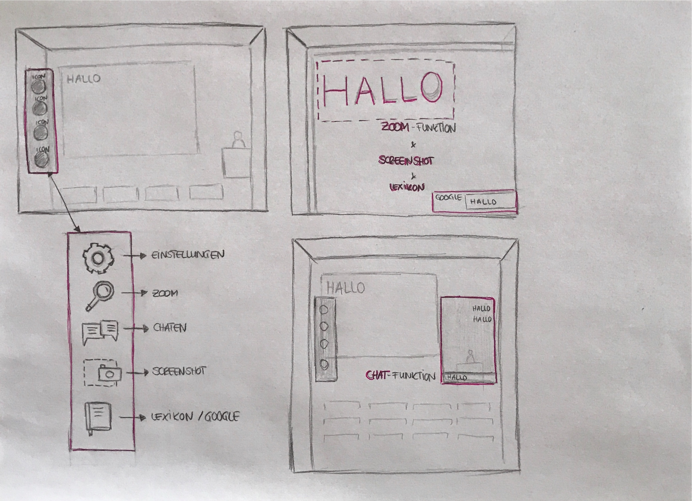

Aufgabe #07
Storyboard

Der Nutzer hat die Möglichkeit über eine Art Menüleiste verschiedene Aktionen auszuführen.
Mit der Lupe kann der Nutzer zu einem bestimmten Punkt zoomen, über den Chat-Button öffnet sich ein separates Fenster, in dem er mit anderen Teilnehmern kommunizieren kann.
Mit dem Screenshot kann der Nutzer bestimmte Bereiche screenshoten und downloaden.
Falls der Nutzer ein Wort nicht kennt, kann er das Wort über den Lexikon-Button in Google nachschlagen.